Chapter One · Section (a): Ayaat on the virtues of spending for the cause of Allah
8. The Sahabah (Radhiallaho anhum) preferring others above themselves
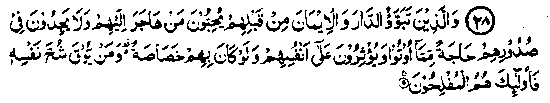
28. (Therein is the share of those people too). "Those who entered the city (Madinah) and the faith (Imaan) before them and they love those who flee to them for refuge and they do not mind what the Muhajireen receive; and prefer them before themselves though poverty may afflict them; whoever is saved from his own avarice, such are the successful ones". (al-Hashr: 9)
Note: The preceding Ayaat mention the categories of the people who were entitled to receive assistance from the ‘Baitul Maal’. This Ayat mentions the Ansaar Radhiallaho anhum, bringing out their particular virtues, one of these being that they accepted Imaan and achieved spiritual perfection while staying at home. Normally, it is a difficult thing to achieve these qualities while living at home, as worldly affairs and other matters become obstacles in the way. The other special virtue that the Ansar possessed, was intense love for the Muhajireen. Those who have a knowledge of the early history of Islam are astonished at the instances manifesting the degree of love the Ansaar had for the Muhajireen. Several such instances have been recounted in the "Stories of Sahabah".
An incident is related here, as an example. When Rasulullah Sallallaho alaihe wasallam migrated to Madinah, he established a fraternity between the Muhajireen and Ansaar. Everyone among the Muhajireen entered into a sacred bond of brotherhood with one from the Ansaar; the necessity arose because the Muhajireen were strangers in Madinah and, as such, they were bound to face hardships in the new place. The Ansaar, being locals, made life easy for the Muhajireen through their personal help and care. This was an excellent arrangement, made by Rasulullah Sallallaho alaihe wasallam, whereby a man from the Ansaar found it easy to take care of a Muhajir brother. Each one was able to look after one particular person. Abdur Rahman Ibne Auf Radhiallaho anho, a Muhajir, has related his own story thus: "When the Muhajireen arrived in Madinah, I was conjoined with Sa‘d Ibne Rabi‘a Radhiallaho anho, an Ansaari, as a brother. Sa‘d told me that he was the richest person in Madinah, and that I could take half of his property and also marry one of his wives whom he would divorce for me, so that marriage could take place after the expiry of ‘Iddat’ (waiting period)". (Bukhari)
Yazeed Ibne Asam Radhiallaho anho says that once the Ansaar requested Rasulullah Sallallaho alaihe wasallam that the agricultural land of each one of them should be divided in two parts and one half given to a Muhajir brother. But Rasulullah Sallallaho alaihe wasallam did not agree to the proposal and was pleased to arrange that the Muhajireen should work on the farms of the Ansaar for a share of the produce, so that both would benefit from each other, the Ansaar benefiting from the Muhajireen’s labour and the latter from the former’s land. Today, it is impossible to imagine that such kinship could be created merely on the basis of religion. The irony of fate is that, today, the Muslims (who were once well-known for their self-sacrifice and sympathy for others) have become engrossed in fulfilling their selfish and personal needs. They do not mind giving trouble to others, as long as they themselves are in comfort Muslim History is full of instances of Muslims bearing hardships and misfortunes for the sake of others. It is said that a pious person had a very bad-tempered wife, who gave him much annoyance all the time. A friend advised him to divorce her, but he replied, "She would then marry another Muslim and would cause similar trouble to him." (Ihya). That is a well-said statement! Could this be said about Muslims today? Could anyone of us bear to suffer in order to save others from suffering?
The third quality of the Ansaar was that they were too broadminded to feel jealous of the Muhajireen when the latter received something from the war booty. According to Hasan Basri Rahmatullah alaihe the Ayat means that the Ansaar did not mind when the Muhajireen were given a general preference over them. (Durre Manthur)
The fourth quality mentioned in the Ayat is that the Ansaar willingly let others have material goods in spite of their own poverty and hunger. Many instances of this have been mentioned in the histories of their lives. A few of those have been recounted in the Author’s booklet entitled ’Stories of Sahabah’ in the section on ‘Sympathy and self-sacrifice’. One of those is the famous event which occasioned the revelation of the above Ayat.
A man came to Rasulullah Sallallaho alaihe wasallam and complained of hunger and poverty; Rasulullah sent someone to his own household for bringing some food for the visitor, but nothing was available there. Rasulullah Sallallaho alaihe wasallam then asked the people present there, if anyone of them would take the guest home and entertain him. One of the Ansaar, whose name is said to be Abu Talha Radhiallaho anho, took the guest home and said to his wife, "This is the guest of Rasulullah; look after him well, and do not keep back anything in the house but serve it to him." The wife replied there was not much food in the house except some for the children. Abu Talha Radhiallaho anho told her to put the children to bed, lay the food before the grown ups (all three, husband, wife, and the guest) and when they sit to eat, put the candle out, pretending to adjust it; so that the guest might eat his fill, they themselves not touching the food while their guest would think they were sharing it The wife did accordingly. The guest ate while they spent the night hungry. In the morning, when Abu Talha Radhiallaho anho came to Rasulullah Sallallaho alaihe wasallam, he said that Allah Ta'ala was greatly pleased with Abu Talha and his wife for their entertainment of their guest the previous night. It was on this occasion that the above Ayat was revealed.
In the series of Ahadith given below, the Hadith quoted at Sr. No. 13. gives further explanation of this Ayat. After recounting the virtues of the Ansaar, the Ayat states that the persons who protect themselves from greed or avarice () are the successful ones. 'Shuhh' means innate greed and miserliness, which may not be manifest in practice. That is why the Ulama have explained it in various ways. The Qur’anic word Shuhh in proper terms means greed or avarice. It includes greed for money as well as the desire to take others’ property. A person came to Abdullah Ibne Mas’ood Radhiallaho anho and complained that he was ruined. On being asked, "How?" the man replied, "Allah Jalla Shanohu has ordained that only those will attain success who are free from Shuhh, and I am suffering from Shuhh because I do not like to lose anything that I possess." Ibne Mas‘ood Radhiallaho anho said that he was not suffering from Shuhh but from miserliness, although that was also not a good thing; Shuhh means taking away another’s property unjustly. Ibne Umar Radhiallaho anho has also been quoted to say the same thing as Ibne Mas‘ood Radhiallaho anho, adding that Shuhh is much worse than miserliness, as a miser only holds back his own property, while a man suffering from Shuhh does this and also wishes that others’ wealth should become his property. Taboos Rahmatullah alaihe says, "Miserliness consists in not spending out of one’s property; whereas Shuhh causes a man to dislike others spending out of their property. Ibne Umar Radhiallaho anho is reported to have i said that Shuhh is even more hateful than miserliness because a miser withholds his own money and a man possessed of Shuhh’(innate greed) does not spend his own property and also wishes that others’ property should come into his possession.
In one of the Ahadith Rasulullah Sallallaho alaihe wasallam has said that a person possessing the following three qualities would be free from Shuhh: (a) giving Zakaat, (b) looking after one’s guest and (c) helping others in their difficulties. In another Hadith Rasulullah Sallallaho alaihe wasallam has said that nothing harms Islam more than Shuhh (greed). Another Hadith states that the dust that gathers on one’s body while one is in the path of Allah and the smoke of Jahannam can never remain together on any person; nor can Imaan and greed (Shuhh) remain together in anybody’s heart. In another Hadith, Jabir Radhiallaho anho has quoted Rasulullah Sallallaho alaihe wasallam as saying, "Beware of oppression (cruelty), for oppression will produce layers upon layers of darkness on the Day of Judgment, and protect yourselves against Shuhh, for Shuhh destroyed the people before you; it made them shed one another’s blood and induced them to commit adultery among their close relations whom it is unlawful to marry." Abu Hurairah Radhiallaho anho says that he heard Rasulullah Sallallaho alaihe wasallam saying,. "Preserve yourselves from innate greed and miserliness, for these evils caused the people before you to sever bonds of relationship with their kinsmen, induced them to commit adultery with women among their close relations forbidden for marriage, and led them to blood-shed." Obviously, committing adultery with a stranger woman costs something while incest with one’s own daughter costs nothing. Similarly, plundering others’ property leads to blood-shed.
Anas Radhiallaho anho says that once a person died in the times of Rasulullah Sallallaho alaihe wasallam and people said that he would go to Jannah but Rasulullah Sallallaho alaihe wasallam said, "Do you know everything about his life? It is just possible that he may have said something that did not concern him or might have been miserly in a matter which brought him no benefit". In another Hadith, this incident has been related differently. A man died a martyr in the battle of Uhad. A woman came to his body and said, "Congratulation on your Shahadah (martyrdom) O son"! Rasulullah Sallallaho alaihe wasallam said to her, 'You are unaware whether he had ever uttered something irrelevant or ever acted as a miser about a thing which was of little use to him". Indeed" to be stingy about a trifle is the worst form of greediness.
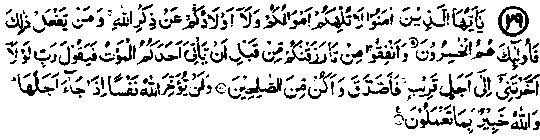
29. O you who believe! Let not your wealth nor your children distract you from remembrance of Allah. Those who do so, they are the losers. And spend of that wherewith We have provided you, before death comes unto one of you and he says: ‘My Lord! If Thou wouldst reprieve me for a little while, then I would give Sadaqah and be among the righteous". But Allah reprieves no soul when its term comes and Allah is aware of what you do. (Al-Munafiqoon: 9-1011)
Note: Engagements concerning property or money matters together with involvement in the family affairs, usually become a hindrance in fulfilling the commandments of Allah, the Almighty. This happens in spite of the certainty of death whose timing remains unknown; when that moment arrives nothing shall avail a person except grief and disappointment. The household, the family, riches and property, all shall have to be left behind and one shall leave the world helpless. Ibne Abbas Radhiallaho anho quoted Rasulullah Sallallaho alaihe wasallam as saying, "When death comes to a person who had sufficient wealth to perform Hajj and to give Zakaat and yet did not accomplish these, he would pine for a return to this world". Someone said to Ibne Abbas that only a Kafir wishes to rejoin worldly life, not a Muslim; Ibne Abbas Radhiallaho anho recited this particular Ayat and said that Allah has addressed this Ayat to the Muslims. In another Hadith, Ibne Abbas Radhiallaho anho has been quoted to say that the Ayat refers to a Mo’min; when death comes to a Mo’min who has had sufficient wealth to enable him to give Zakaat as well as to perform Hajj, and yet has failed to do so in his lifetime, besides neglecting many other obligations towards Allah, he will wish to return to life, so that he may fulfil all those obligations. Nevertheless, Allah Jalla Jalalohu has decreed that when the moment of death comes, it cannot be delayed. (Durre Manthur)
The Holy Qur’an reminds men, time and again, that the moment of death has been fixed for every individual and that there can be no postponement. Man keeps thinking of giving such and such thing as Sadaqah, of dedicating such and such things for a sacred cause, and of donating so much to so and so through his will; but he remains absorbed in such thoughts till Fate suddenly takes his life. And he dies suddenly while sitting, walking or sleeping. Therefore, one should not delay the performance of virtuous deeds by prolonged thinking or planning, but one should spend for the cause of Allah as soon as possible and deposit it with Him.
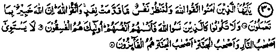
30. O ye who believe! Fear Allah. And let every soul look to that which it has sent for the morrow. Fear Allah! Lo! Allah is informed of what you do. And be not you like those who forgot Allah, therefore He caused them to forget their souls. Such are the evil-doers. Not equal are the inhabitants of the Fire (Jahan-nam) and the dwellers of Jannah; the dwellers of Jannah shall be the victorious. (al-Hashar: 18-20)
Note: ‘Allah caused them to forget their souls’ means they lost their intelligence and were unable to distinguish between right and wrong and indulged in things ruinous for themselves. Jarir Radhiallaho anho says that once at mid-day he was in attendance upon Rasulullah Sallallaho alaihe wasallam when a Jama'at of the Mudhar tribe arrived. They were all bare-headed and bare-footed and in a state of starvation. Rasulullah Sallallaho alaihe wasallam turned pale with grief to see them in this condition and went into his dwelling (obviously to get something for the visitors). He returned to the Masjid after a while and ordered Bilal Radhiallaho anho to say Azaan. After performing the Zuhur Salaat he mounted the pulpit, praised Allah Ta'ala and recited some Ayaat of the Holy Quran including the one above. He then exhorted the people to give Sadaqah before it becomes impossible to do so and repeated this by saying, "You must give before you become powerless to give, and give immediately whatever you can: a Dinaar, a Dirham, a piece of cloth, a little wheat or barley, dates or even a piece of a date”. Hearing this, a man from the Ansaar got up, went home and brought a heavy bag full of things which he could hardly carry, and presented it to Rasulullah Sallallaho alaihe wasallam, whose serene face brightened with joy and he said that whosoever sets a good example shall get a reward for that as well as the reward equivalent to the reward of those who follow his good example, without any reduction in the latter’s reward. Similarly, if a person sets a bad example, it will count as a sin against him and the sins of those who follow that example shall also go into his account, without any reduction in the latter’s burden. Thereupon, all the people went away and returned with something to give, a Dinaar or a Dirham or some grain. The result was that there were two heaps of clothes and grain, etc., gathered in front of Rasulullah Sallallaho alaihe wasallam. These were all distributed among the tribe of Mudhar. (Nisai-Durre Manthur)
One of the Ahadith states, "O people send something in advance. The time is soon coming when Allah Ta‘ala will talk to you without an intermediary and without a veil and say, ‘Did not My Rasul come to you with My commandments? Did I not grant you wealth? Was it not more than your own needs? What did you send in advance for your requirements here? The man will look around and see nothing except Jahannam in front of him". The Hadith further states, "Whoever wishes to save himself from this situation must give Sadaqah, even if it be a portion of a date". (Kanz). It will be a terrible situation and a frightening stock-taking. The blazing Fire of Jahannam will be in front of the men trembling with the fear of being thrown into it at any moment, and deeply sorrowing for not having given away everything in worldly life and for withholding money for imaginary needs, and for wasting it on useless things. When the eyes close, all needs vanish except the severe one", an escape from Jahannam which will keep haunting a person.
Abu Bakr Siddiq Radhiallaho anho addressing the people said, "Bear in mind that the tenure of your life, out of which you spend mornings and evenings, is not known to you. You do not know when your end will come. You should, if you can, most carefully utilise it before the end comes. This you can do only if Allah wills. There were people who spent their time in useless occupations; Allah Jalla Shanohu has forbidden you to be like them and has said:
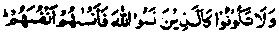
And be not you like those who forgot Allah, therefore He caused them to forget themselves. (Al-Hasher: 19)
Where are those of your brethren whom you knew? They have departed after finishing their term; their deeds have come to an end and they are face to face with reckoning of their deeds. They will lead a joyful life if their deeds were good or be in suffering if they were bad. Where are those despots of the past who raised walled cities for their protection? They are lying now under stones and mounds. This is the Sacred Word of Allah whose marvels shall never end, nor will its light grow dim. Get light from the Word of Allah today, to serve you during the dark days to come, and give heed to its warnings. Allah Ta'ala has praised certain people and said:
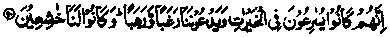
They hastened to do good deeds and called Us with Mixed feelings of longing and fear and showing humility towards Us. (al-Ambyia: 90) .
Abu Bakr Radhiallaho anho went on saying, "That word has no merit which is not intended to please Allah; and that wealth is without benefit which is not spent for the cause of Allah; and that man is not good whose patience does not overcome his anger, and he is not a proper person who is concerned more about people’s reproach than the pleasure of Allah Ta'ala Shanohu". (Durre Manthur)
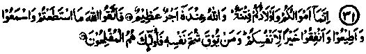
31. Your wealth and your children are only a temptation, whereas, Allah! with Him is an immense reward. So keep your duty to Allah as best as you can, and listen, and obey and spend; that is better for your souls. And whoso is saved from his own greed, such are successful. (at-Taghabun: 15-16)
Note: Shuhh i.e. innate greed is the worst form of miserliness and we have already dealt with it under the Ayat given at No. 28 above. Wealth and children are a great trial for men: to distinguish those whose excessive love for them makes them neglect the commandments and remembrance of Allah, from those who persevere in loyalty to Him, despite these two temptations. Of course, the example to be followed is that of Rasulullah Sallallaho alaihe wasallam who had nine wives, several children and grand-children. In addition Rasulullah Sallallaho alaihe wasallam and most of the Sahabah Radhiallaho anhum had very large families. Many books on history give details of their children and grandchildren. It is difficult to calculate the exact number of the sons, grandsons and great grandsons of Anas Radhiallaho anho, who himself remarked once, "Not to speak of the descendants of my sons and daughters, I have myself buried one hundred and twenty five persons out of my direct descendants 1 (Isabah). One can imagine how many might have survived after his death and how large was the number of his sons, grandsons, great-grandsons, and other descendants! And yet Anas Radhiallaho anho is counted among the Sahabah who have transmitted a large number of Ahadith, and who took part in Jehaad frequently! Such a large family and its obligations could not deter him from participation in Jehaad, nor distract him from the pursuit of knowledge of Ahadith.
When Zubair Radhiallaho anho was martyred, his survivors included four wives, nine sons and nine daughters, and a few of his grandsons were even older than some of his sons. (Bukhari). Apart from these, he had other children who had died in his life. In spite of such a large family, he never joined any service or occupation, but spent his entire life in Jehaad and striving for the cause of ‘Deen’. Similarly, there were many other Sahabah like them, who never allowed families, however large, or abundant wealth to deter them from the performance of their religious obligations and functions. A number of them had large business concerns but never did these hinder them from observing their religious duties. Allah Ta'ala Himself has praised them in the Holy Qur’an by saying:
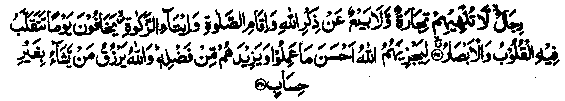
(They are such) people whom buying and selling do not prevent from the remembrance of Allah, performance of Salaat and giving Zakaat. They are fearful of the Day when all hearts and eyes will be overturned, but in their case they will receive excellent returns for their noble deeds and Allah Ta'ala, by His special favour, will grant them extra rewards. (an-Noor: 37-38)
Several incidents have been related in the explanatory discussions of this Ayat. It is said that the Sahabah were businessmen, but business never prevented them from the remembrance of Allah Ta‘ala. When the Azaan was called, they would immediately leave their shops for the performance of Salaat. (Durre-Manthur)
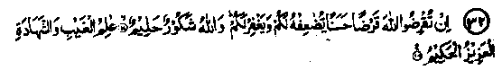
32. If you lend unto Allah a goodly loan. He will double it for you and will forgive you, for Allah is Responsive, Clement, Knower of the invisible and visible, the Mighty, the Wise. (at-Taghabun: 17-18)
Note: The same subject has been treated in the Ayaat given at Serial Nos. 25, 26 and 27. It is Allah Jalla Shanohu’s special bounty and kind regard for the well-being of His bondsmen that He has repeatedly recounted the things which are important for them. We often recite these Ayaat merely for the sake of earning blessings of recitation with it. It is a favour of the Gracious Allah that He grants good returns for the mere recitation of the Qur’an. But it has to be borne in mind that the Qur’an has not been revealed simply for recitation, but its sacred commandments are to be put into practice and properly followed in life. It should be realised that when the Sovereign and Lord of the whole Universe, Who is our Benefactor, our Guardian and Helper, our Cherisher and, above all, our Creator, repeatedly orders us to do something and we, in response, merely say, 'Yes, O Lord we have read your directions and orders", and remain content with that, would not that be height of injustice?
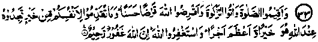
33. And establish Salaat, and pay Zakaat, and (so) lend unto Allah a goodly loan. Whatsoever good you send before, you for your souls, you will surely find it with Allah, better and greater in the recompense, and seek forgiveness of Allah. Lo! Allah is Forgiving, Merciful. (al-Muzammil: 20)
(A goodly loan or ‘Qardh-e-Hasanah’ is a loan without interest or any thought of gain or loss.)
Note: "Better and greater in the recompense" means that a donor will be given better and greater recompense in the Hereafter for the money spent as Sadaqah, far better in quality and quantity than the thing he would have got, in return for the money, if he had spent it in the world, for instance, two kilograms of wheat for a rupee. The fact is that the recompense in the Hereafter would be far superior to the possible worldly returns both in quality and quantity. We have already quoted a Hadith under the Ayat given at Serial No. 7 to the effect that "Even if a date is given away as Sadaqah out of the lawfully earned property, with sincerity of intention, Allah Ta'ala grants increase in the recompense for it, till it becomes as large as the Mount Uhad."
Would that we appreciated the generosity of our Bounteous Lord Who. grants such enormous rewards for such small amounts of Sadaqah, and deposited with Him as much money as possible! For, then He would have returned it to us with bountiful increase, at the time of our dire need.
In this Ayat, Allah Ta'ala has also promised that whatsoever virtue we send before us, He will accord us an equal recompense for it. In our booklet, ‘Barakaat-e-Zikr’ we have quoted many Ahadith about the increase in rewards for good deeds, including the following Hadith:
In the estimation of Allah the reward for saying:
(
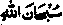
) Allah be glorified, or (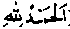
) All praises to Allah or () There is none to be worshipped but Allah, or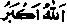
Allah is Great, is even larger than Mount Uhad, provided these are recited with the purest motive of pleasing Allah.As a matter of fact, sincerity of intention is the first condition for the acceptance of any virtuous deed. A good deed performed insincerely, with a worldly motive, shall be of no value in the Akhirah. For cultivating this quality, one has to associate with spiritual guides (Mashaaikh), serve them devotedly and earn their favour. For it is only through associating with such people that one can learn how to perform good deeds solely for the pleasure of Allah Ta'ala.